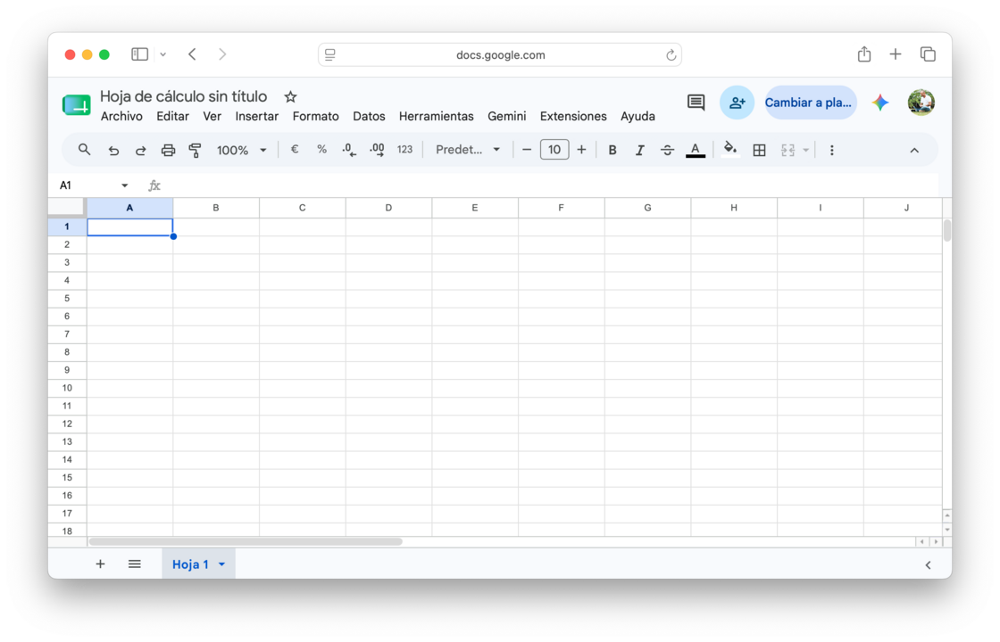
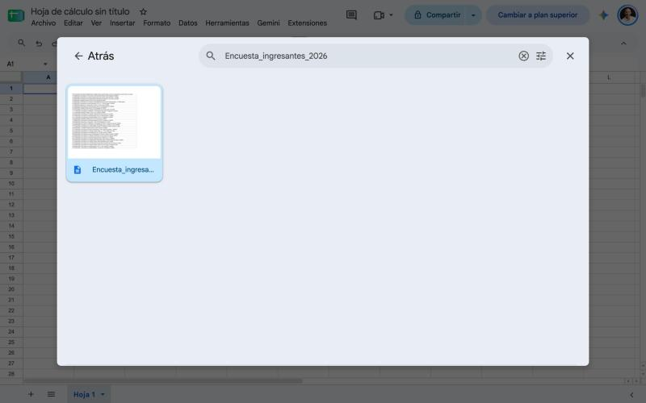
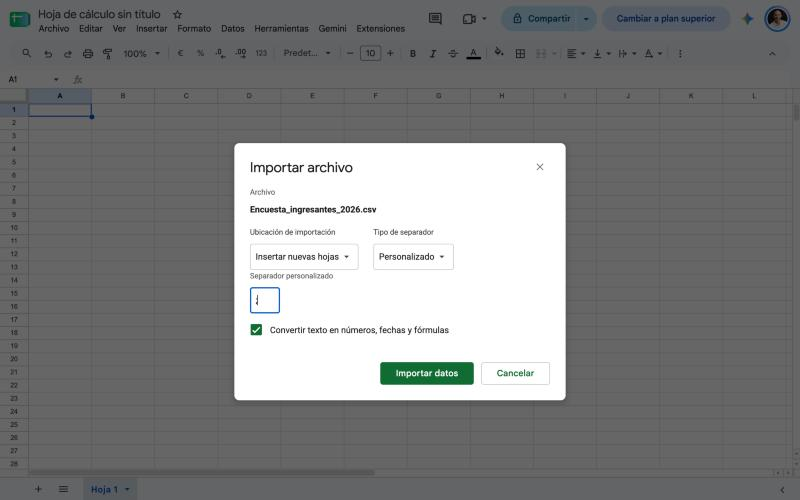
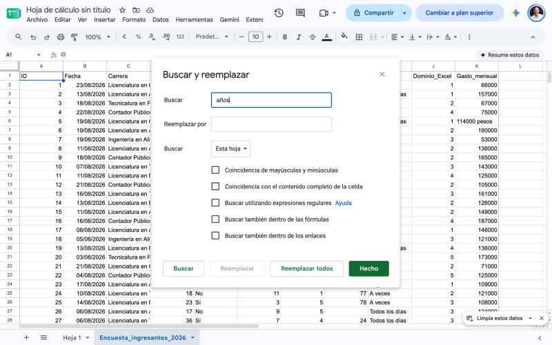
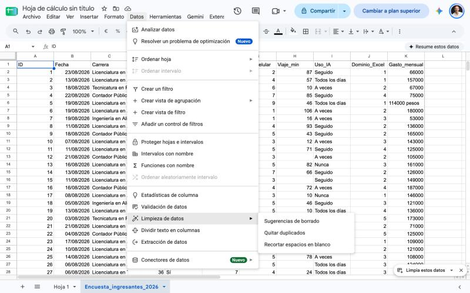
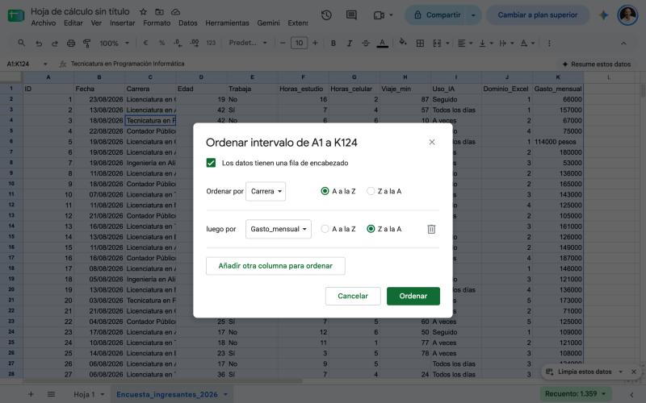

Conocer Google Sheets y el caso del curso
Una planilla de cálculo es un programa donde los datos se ordenan en filas y columnas y donde se pueden escribir fórmulas que calculan a partir de esos datos. Si cambiás un dato, los resultados se actualizan solos.

Vas a trabajar en Google Sheets, que corre en el navegador, guarda cada cambio solo en tu Drive y permite que varias personas editen el mismo archivo a la vez. No hay botón de guardar. Lo que aprendas acá sirve también en Excel.
El caso que vas a construir: Retrato del curso
El caso es una encuesta que la universidad hace cada cuatrimestre a los ingresantes: qué estudian, si trabajan, cuánto tardan en llegar, cuánto usan el celular y la inteligencia artificial. Recibís el listado tal como sale del formulario, con los defectos de cualquier dato real.
💡 Datos simulados
Las 120 respuestas de este caso son inventadas, pero siguen el espíritu de la encuesta real que responden los ingresantes: edades, carreras, trabajo, uso del celular. Así podés trabajar con datos que se parecen a los tuyos sin exponer a nadie.
La pantalla de Google Sheets
| Elemento | Dónde está | Para qué sirve |
|---|---|---|
| Nombre del archivo | Arriba a la izquierda | Mientras no lo cambies se llama Hoja de cálculo sin título. Hacé clic y escribí el nombre. |
| Menús | Debajo del nombre | Archivo, Editar, Ver, Insertar, Formato, Datos, Herramientas, Extensiones y Ayuda. Casi todo lo de esta clase está en Archivo, Formato y Datos. |
| Barra de herramientas | Debajo de los menús | Atajos a lo más usado: deshacer, formato de número, negrita, color de relleno, bordes, combinar celdas. |
| Cuadro de nombre | A la izquierda de la barra de fórmulas | Muestra qué celda está activa. Si escribís D25 y apretás Enter, saltás a esa celda. |
| Barra de fórmulas | A la derecha del cuadro de nombre | Muestra el contenido real de la celda activa: el dato o la fórmula que lo calcula. |
| Cuadrícula | El centro de la pantalla | Letras arriba (columnas) y números a la izquierda (filas). |
| Pestañas de hoja | Parte inferior | Una pestaña por hoja. El signo + agrega una hoja nueva. |

Un archivo nuevo en Google Sheets. Tu pantalla puede tener algún botón distinto según tu cuenta, pero la distribución es esta.
Archivo, hoja, celda y rango
| Concepto | Qué es |
|---|---|
| Archivo | El documento completo, guardado en tu Drive. Puede tener muchas hojas. En Excel se llama libro. |
| Hoja | Cada pestaña del archivo. Una hoja nueva trae 1.000 filas y 26 columnas, y podés agregar más. |
| Celda | La intersección de una columna y una fila. Se nombra con la letra y el número: B2 es la columna B, fila 2. |
| Celda activa | La celda donde vas a escribir. Tiene un borde azul y solo puede haber una. |
| Rango | Un conjunto de celdas contiguas, nombrado con la primera y la última separadas por dos puntos: A2:A10 o B2:D5. |
| A | B | C | D | |
|---|---|---|---|---|
| 1 | Nombre | Edad | Trabaja | Gasto |
| 2 | Ana | 19 | No | 66000 |
| 3 | Luis | 42 | Sí | 157000 |
| 4 | Eva | 28 | Sí | 75000 |
El rango B2:B4 tiene tres celdas. Al seleccionarlo, el cuadro de nombre muestra su nombre y los encabezados de columna y fila cambian de color.
Tu primera tabla
- Entrá a
sheets.google.comcon tu cuenta y creá una hoja de cálculo en blanco. NombralaRetrato del curso - TuApellido. - Abrí Archivo → Configuración y revisá que la Configuración regional diga Argentina. De eso dependen el formato de fecha, la coma decimal y el separador de las fórmulas.
- Renombrá la hoja como
PRACTICAy tipeá la tabla de arriba (Nombre, Edad, Trabaja, Gasto, con Ana, Luis y Eva). UsáTabpara pasar a la derecha yEnterpara bajar. - Saltá a una celda lejana: hacé clic en el cuadro de nombre (el recuadro de arriba a la izquierda, junto a la barra de fórmulas, que muestra la celda activa), escribí
D25y apretáEnter. La celda activa pasa a serD25y el cuadro de nombre diceD25. - Volvé al principio con
Ctrl+Inicio(Mac:⌘+Fn+←). La celda activa tiene que ser de nuevoA1. - Seleccioná un rango: hacé clic en
B2y, sin soltar, arrastrá hastaB4(o clic enB2y despuésMayús+ clic enB4). Las tres edades quedan marcadas y el cuadro de nombre muestraB2:B4.
Importar datos y entender la tabla
Los datos no se tipean: llegan de otro lugar. En la vida real, una encuesta se arma con un formulario (por ejemplo Google Forms) y cada respuesta cae como una fila en una hoja. Acá vas a importar el resultado ya exportado como archivo de texto, un .csv, que es el formato universal para mover datos entre programas.
Una tabla de datos tiene reglas
Para que una planilla funcione como base de datos, los datos tienen que estar ordenados de una manera concreta.
| Regla | Por qué |
|---|---|
| Una fila por registro | Cada fila es una respuesta de una persona. Nada de filas de subtotales ni filas vacías en el medio. |
| Una columna por campo | Cada columna guarda una sola cosa: la edad, la carrera, el gasto. Nunca dos datos en la misma columna. |
| Encabezado en la fila 1 | Un nombre corto y único por columna, sin celdas combinadas. |
| Un solo tipo de dato por columna | O todo números, o todo fechas, o todo texto. Mezclar 19 con 19 años rompe los cálculos. |
Texto a la izquierda, números a la derecha
Sheets alinea los datos según su tipo: el texto se pega a la izquierda y los números y las fechas a la derecha. Eso sirve como diagnóstico. En la planilla de abajo, la edad de Eva quedó a la izquierda: Sheets la leyó como texto y no la va a poder sumar ni promediar.
| A | B | C | D | |
|---|---|---|---|---|
| 1 | ID | Fecha | Edad | Gasto |
| 2 | 21 | 21/08/2026 | 21 años | 71000 |
| 3 | 22 | 04/08/2026 | 25 | 125000 |
| 4 | 72 | 18/08/2026 | 21 | 30000 pesos |
Los datos que quedaron alineados a la izquierda (en rojo) son texto: 21 años no es un número.

Archivo → Importar: elegí el archivo Encuesta_ingresantes_2026.csv. Si lo tenés en tu computadora, usá la pestaña Subir y arrastralo.

El cuadro de importación: Ubicación de importación (Insertar nuevas hojas), Tipo de separador y Convertir texto en números, fechas y fórmulas tildado.
💡 El separador
El archivo separa las columnas con punto y coma (;) y no con coma, porque en Argentina la coma es el decimal. Sheets suele detectarlo solo (Detectar automáticamente). Si al importar ves todo el contenido amontonado en la columna A, no lo detectó: elegí Personalizado y escribí ;.
Importar la muestra y buscar defectos
- Descargá
Practica_encuesta_mini.csvDescargar: es una muestra de 11 respuestas. - Abrí Archivo → Importar → Subir y elegí el archivo. En Ubicación de importación elegí Insertar hoja(s) nueva(s), en Tipo de separador Personalizado con
;, y dejá tildada la conversión de texto en números y fechas. Renombrá la hoja nueva comoMINI. - Con
Ctrl+↓(Mac:⌘+↓) viajá hasta la última fila. Tendría que ser la 12 (11 respuestas más el encabezado). - Recorré las columnas mirando la alineación y anotá, sin corregir todavía, los cinco defectos que encuentres: un texto pegado a un número, otro texto pegado a un número, espacios de más, una celda vacía y una fila repetida.
Hojas: el original no se toca
El dato original no se toca: se guarda tal como llegó y se trabaja sobre una copia. Si te equivocás, siempre podés volver al original.
| Para... | Hacé esto |
|---|---|
| Renombrar una hoja | Doble clic en la pestaña, o clic en la flecha de la pestaña → Cambiar nombre |
| Cambiarle el color | Flecha de la pestaña → Cambiar color |
| Duplicar una hoja | Flecha de la pestaña → Duplicar |
| Mover una hoja de lugar | Arrastrar la pestaña, o flecha de la pestaña → Mover a la derecha / a la izquierda |
| Ocultar una hoja | Flecha de la pestaña → Ocultar hoja (se recupera desde Ver → Hojas ocultas) |
| Eliminar una hoja | Flecha de la pestaña → Eliminar. Pide confirmación, pero después de guardar no hay vuelta atrás salvo el historial. |
⚠️ Nombres de hoja
Elegí nombres cortos, sin espacios ni tildes si podés (CRUDO, DATOS, CARRERAS). Un nombre simple es más fácil de escribir y de leer. En la práctica con la muestra usamos el prefijo MINI_ (MINI_CRUDO, MINI_DATOS) para no confundirla con las hojas de la entrega final.
El original no se toca
- Renombrá la hoja
MINI(la que importaste recién) comoMINI_CRUDOy pintala de rojo. - Duplicala, renombrá la copia como
MINI_DATOSy pintala de verde. De acá en adelante trabajás solo enMINI_DATOS. - Movela con la flecha de la pestaña para que quede a la izquierda de
MINI_CRUDO. - Ocultá la hoja
PRACTICAy recuperala desde Ver → Hojas ocultas.
Limpiar los datos sin romper la tabla
Limpiar es decidir qué se corrige, qué se deja y qué se descarta, sin romper el resto de la tabla. La encuesta tiene cinco defectos, cada uno con su herramienta:
| Defecto | Cómo se ve | Qué hacés |
|---|---|---|
| Texto pegado a un número | 21 años en Edad, 114000 pesos en Gasto | Buscar y reemplazar: cambiás años y pesos por nada |
| Espacios de más | ␣␣Contador Público o Licenciatura en Biotecnología␣␣ | Recortar espacios en blanco |
| Filas repetidas | La misma respuesta cargada dos veces, con el mismo ID | Quitar duplicados |
| Mayúsculas mezcladas | LICENCIATURA EN ADMINISTRACIÓN junto a Licenciatura en Administración | Nada: es una decisión, mirá abajo |
| Celdas vacías | Viaje_min sin dato en 5 respuestas | Nada: es una decisión, mirá abajo |
Buscar y reemplazar
Se abre con Ctrl+H (Mac: ⌘+Mayús+H) o desde Editar → Buscar y reemplazar. Escribís lo que buscás, lo que lo reemplaza, y elegís dónde buscar. Ese último campo es el que más importa.
⚠️ Elegí bien dónde reemplazar
En Buscar hay una opción Todas las hojas. Si la dejás elegida, vas a modificar también CRUDO y perdés el original. Elegí siempre Esta hoja, y antes de apretar Reemplazar todo fijate que estés parado en DATOS.

Editar → Buscar y reemplazar: el texto a buscar, el campo Reemplazar por vacío, Esta hoja en la lista Buscar y el botón Reemplazar todo.
Recortar espacios y quitar duplicados
Las dos herramientas están en Datos → Limpieza de datos. Recortar espacios en blanco trabaja sobre las celdas que tengas seleccionadas: borra los espacios del principio y del final de cada una. Quitar duplicados analiza el rango seleccionado, y si marcás que tus datos tienen fila de encabezado, no la toca.

Datos → Limpieza de datos con Quitar duplicados y Recortar espacios en blanco. La primera opción, Sugerencias de borrado, es un asistente que propone arreglos solo.
Las dos decisiones
Mayúsculas: dejalas como están. Para una planilla, LICENCIATURA EN ADMINISTRACIÓN y Licenciatura en Administración son el mismo texto cuando se comparan o se ordenan. En cambio, los espacios de más sí hacen que dos textos parezcan distintos, por eso hay que recortarlos.
Vacíos: dejalos vacíos. Escribir un 0 en Viaje_min sería inventar un dato: nadie tarda cero minutos en llegar. Una celda vacía dice la verdad ("no sé") y los cálculos de promedio la ignoran.
Limpiar la muestra
- Parate en
MINI_DATOS. Seleccioná la columnaD(Edad) y usá Editar → Buscar y reemplazar (Ctrl+H; Mac:⌘+Mayús+H): buscá␣años(un espacio y la palabra), reemplazá por nada, Esta hoja, Reemplazar todo. Tendría que informar 1 reemplazo. - Repetí en la columna
Kcon␣pesos. Tendría que informar 1 reemplazo. Revisá que ambos datos quedaron alineados a la derecha. - Seleccioná la columna
Cy aplicá Datos → Limpieza de datos → Recortar espacios en blanco. - Seleccioná todo el rango de datos, abrí Datos → Limpieza de datos → Quitar duplicados y tildá Los datos tienen una fila de encabezado. Tendría que informar que se quitó 1 fila.
- Control: seleccioná la columna
Dy mirá abajo a la derecha, donde Sheets muestra la suma de lo seleccionado. Tendría que decir 260. En la columnaKtendría que decir 1.050.000. Si dan menos, alguna celda sigue siendo texto: repará la alineación.
Formato: número, encabezado y presentación
El formato cambia cómo se ve un dato sin cambiar el dato. Un 66000 con formato de moneda se ve $ 66.000,00, pero sigue siendo el número 66000. Se aplica sobre lo que tengas seleccionado.
| Botón | Qué hace | Dónde |
|---|---|---|
| Formato de moneda | Barra de herramientas, o Formato → Número → Moneda | |
| Formato de porcentaje: multiplica por 100 lo que ya está escrito | Barra de herramientas | |
123 | Menú de más formatos: fecha, hora, número con decimales, texto plano | Barra de herramientas |
| B I | Negrita, cursiva, subrayado, tachado | Barra de herramientas, Ctrl+B / Ctrl+I / Ctrl+U (Mac: ⌘+B / ⌘+I / ⌘+U) |
| Color de relleno y de texto | Barra de herramientas | |
| Bordes: primero color y estilo, después ubicación | Barra de herramientas | |
| Combinar celdas: solo el título de la portada, nunca en la tabla de datos (ni en los encabezados) | Barra de herramientas, o Formato → Combinar celdas | |
| Ajustar texto: el texto largo baja a otra línea en vez de desbordar | Formato → Ajuste de texto |
Ancho de columnas e inmovilizar el encabezado
Para ajustar una columna al contenido, hacé doble clic en el borde derecho de su letra. Con Ver → Inmovilizar → 1 fila la fila de encabezado queda fija arriba cuando bajás por las 120 respuestas: nunca te olvidás qué columna estás mirando.
Una portada con imagen
La hoja LEEME es la portada del archivo: el título, qué contiene y quién lo hizo. Para ponerle una imagen, usá Insertar → Imagen → Insertar imagen sobre las celdas y elegí un archivo o pegá un enlace. Una imagen flotante se puede mover y agrandar, pero no forma parte de ninguna celda. Si la querés dentro de una celda, usá Imagen en la celda.
Presentar la muestra
- En
MINI_DATOS, seleccioná la fila 1 y aplicá negrita, un relleno verde claro y borde inferior. - Inmovilizá la fila 1 con Ver → Inmovilizar → 1 fila.
- Dale a la columna
Kformato de moneda y comprobá en el menú123que la columnaBtenga formato de fecha. - Ajustá el ancho de todas las columnas con
Ctrl+A(Mac:⌘+A) y doble clic en un borde entre letras. - Repaso: seleccioná la columna
Ky volvé a mirar la suma de abajo. ¿Cambió con el formato? (No tiene que cambiar: el formato no toca el dato.)
Series y orden
Series con el controlador de relleno
Cuando seleccionás una celda, en su esquina inferior derecha aparece un cuadradito: es el controlador de relleno. Al arrastrarlo, Sheets completa solo la serie que reconoce a partir de lo que ya escribiste.
| Escribís | Arrastrás y obtenés |
|---|---|
Lunes | Martes, Miércoles, Jueves... (los días de la semana, en ciclo) |
1 y 2 en dos celdas seguidas, ambas seleccionadas | 3, 4, 5... (Sheets detecta la diferencia entre las dos) |
01/09/2026 | 02/09/2026, 03/09/2026... (un día por celda) |
También podés hacer doble clic en el controlador para que la serie se extienda hasta donde llegan los datos de la columna de al lado.
Ordenar una tabla
Ordenar reacomoda las filas completas según los valores de una columna. Para ordenar por varios criterios, seleccioná todo el rango de datos y andá a Datos → Ordenar intervalo → Opciones avanzadas de ordenación de intervalos. Ahí tildás Los datos tienen una fila de encabezado, elegís la primera columna y su sentido (A→Z o Z→A) y agregás otra columna con Añadir otra columna para ordenar.
⚠️ Ordenar siempre la tabla completa
Si ordenás una sola columna, esa columna se reacomoda y las demás se quedan en su lugar: cada respuesta termina con la edad y el gasto de otra persona. Por eso se selecciona todo el rango y no una columna suelta. Si te equivocás, deshacé enseguida con Ctrl+Z (Mac: ⌘+Z).

El cuadro de ordenación avanzada con dos criterios: Ordenar por Carrera de A a Z y luego por Gasto_mensual de Z a A, con la fila de encabezado tildada.
💡 Para eso sirve la columna ID
La columna ID numera las respuestas en el orden en que llegaron. Si ordenás por otros criterios y querés volver al orden original, alcanza con ordenar por ID de menor a mayor. Una tabla sin columna de identificación no tiene vuelta atrás.
Series y orden
- Creá una hoja
ESCALAS. EnA1escribíNivel, enA2yA3los números1y2. Seleccionalas juntas y arrastrá el controlador hasta el 5. - En
B1escribíDía, enB2Lunesy completá la serie hastaDomingo. EnC1escribíSemana, enC203/08/2026y enC310/08/2026, y completá hasta el31/08/2026: un lunes por celda. - En
MINI_DATOS, ordená la tabla completa por Carrera de A a Z y, dentro de cada carrera, por Gasto_mensual de mayor a menor. ¿Qué carrera quedó primera? - Volvé al orden original ordenando por
ID. La fila 2 tiene que ser de nuevo la respuesta 1.
Guardar, compartir y llevar a Excel
Dos hábitos para cuidar un archivo de planilla: hacer una copia antes de seguir y dar el permiso justo al compartir. Además, el archivo se puede bajar a Excel.
| Hábito | Cómo se hace |
|---|---|
| Copia antes de seguir | Archivo → Hacer una copia. La copia queda en tu Drive como un archivo aparte, congelado en el estado en que la hiciste. |
| Compartir con el permiso justo | Botón Compartir arriba a la derecha. Lector solo mira, Comentador mira y comenta, Editor modifica. Conviene dar siempre el más chico que alcance. |
| Llevarlo a Excel | Archivo → Descargar → Microsoft Excel (.xlsx). El archivo baja a tu compu y se abre en Excel con las hojas, los datos y los formatos. |
Copia, permisos y Excel
- Hacé Archivo → Hacer una copia y nombrala
PRUEBA_Copia. Abrila y comprobá que es un archivo aparte, con todas las hojas. - En esa copia, abrí Compartir y mirá los tres roles posibles (Lector, Comentador, Editor). No compartas todavía con nadie.
- Bajá
MINI_DATOScon Archivo → Descargar → Microsoft Excel (.xlsx) y abrilo en Excel si lo tenés. Comprobá que la moneda y la fecha se conservaron. Después podés borrar la copia de prueba.
El pedido de la clase
Ya practicaste todas las técnicas sobre una muestra de 11 filas, donde cada error se ve a simple vista. Ahora hacés lo mismo con los datos reales, que son 120 respuestas. Este es el trabajo que se entrega: un solo archivo que sirve también para dar el presente.
📌 El pedido de Secretaría Académica
Necesitamos la encuesta de ingresantes cargada, limpia y presentable, con el original a salvo y una portada que explique qué hay en el archivo. Cuando termines, compartila con la cátedra.
💡 Una copia por clase, con nombre claro
Al terminar, hacé una copia y entregá la copia: el archivo de trabajo queda intacto. Nombrala con la clase, tu apellido y la fecha, como Clase 08 - Apellido - AAAA-MM-DD. Así queda ordenada por clase y apellido y se encuentra enseguida. Al docente se le da el permiso que pide la consigna.
La encuesta de ingresantes, lista para usar
Trabajá en el archivo Retrato del curso, que ya tiene las hojas de práctica. Estos son los pasos y los controles para saber si están bien.
- Descargá
Encuesta_ingresantes_2026.csvDescargar e importalo a una hoja nueva (separador;). RenombralaCRUDOy pintala de rojo. La última fila con datos tiene que ser la 124. - Duplicá
CRUDO, llamáDATOSa la copia y pintala de verde. Creá una hojaLEEME, pintala de gris y ponela al principio. - Limpiá
DATOS: reemplazá␣añosen la columnaD(4 reemplazos) y␣pesosen laK(4 reemplazos), recortá los espacios de la columnaCy quitá los duplicados (3 filas). Controles: última fila con datos 121, suma de Edad 2.909, suma de Gasto_mensual 15.242.000. - Dale a
DATOSel mismo formato que a la muestra: encabezado destacado, fila 1 inmovilizada, moneda, fecha y ancho de columnas. - En
LEEME, escribí el título Retrato del curso 2026 enA1, combiná y centráA1:E1y dale tamaño 18. Debajo agregá tu nombre, la fecha, qué contiene cada hoja, los defectos que encontraste y qué decidiste hacer con cada uno (y por qué dejaste los vacíos y las mayúsculas). Insertá una imagen a la derecha del título. - Ordená
DATOSpor Carrera de A a Z y luego por Gasto_mensual de mayor a menor. EnLEEMEanotá cuál es la primera carrera y el mayor gasto de esa carrera (Contador Público, $ 220.000). Volvé al orden original porID. - Ocultá las hojas de práctica (
PRACTICA,MINI_CRUDO,MINI_DATOS,ESCALAS). Hacé Archivo → Hacer una copia y nombralaClase 08 - Apellido - AAAA-MM-DD. - En la copia, hacé clic en Compartir, agregá a
unqarchivos@gmail.comcon permiso de Comentador, copiá el enlace y subilo al aula virtual. Ese enlace es tu presente y tu entrega.
Resumen de la clase
Importaste 123 respuestas, separaste el original del trabajo, corregiste textos pegados a números, recortaste espacios, quitaste filas repetidas, decidiste qué dejar como estaba, diste formato a la tabla y la ordenaste sin desarmar los registros.
Actividades
 Actualizá tu LinkedIn
Actualizá tu LinkedIn
Google Sheets. Cómo la justificás: importo datos de fuentes externas (CSV, formularios), los limpio sin alterar el original (buscar y reemplazar, recorte de espacios, eliminación de duplicados), los estructuro como tabla con formato numérico correcto y los ordeno y comparto con permisos adecuados.
Referencia rápida
Enter para saltarCtrl+Inicio (Mac: ⌘+Fn+←)Ctrl+Flecha (Mac: ⌘+Flecha)A2:A10;CRUDO) no se tocaCtrl+H (Mac: ⌘+Mayús+H), siempre en Esta hoja% multiplica por 100 lo que ya está escrito.Herramientas
Los sitios, aplicaciones y archivos que usamos en esta clase, a mano. Los costos pueden cambiar; 🎓 indica beneficio para estudiantes.
Planilla de cálculo


Archivos de la clase
Glosario
Documento completo de Google Sheets, guardado en Drive, con una o muchas hojas. En Excel se llama libro.
Cada pestaña del archivo: una cuadrícula de filas y columnas donde se cargan los datos.
Unidad básica de la hoja, identificada por la letra de su columna y el número de su fila, por ejemplo B2.
Conjunto de celdas contiguas, nombrado con la primera y la última separadas por dos puntos, por ejemplo A2:A10.
Un registro es una fila (una respuesta de una persona). Un campo es una columna (un dato: la edad, la carrera).
Archivo de texto plano donde cada línea es una fila y los datos se separan con un carácter, en este caso el punto y coma.
Los datos tal como llegaron de la fuente, sin ninguna corrección. Se conservan intactos.
Corregir defectos de una tabla (textos mezclados, espacios, duplicados) sin alterar el original.
Propiedades visuales (número, alineación, fuente, bordes, relleno) que cambian cómo se ve un dato sin alterarlo.
Cuadrado en la esquina de la celda activa que, al arrastrarlo, copia contenido o completa series.
Reacomodar las filas de una tabla según los valores de una o más columnas.
Nivel de acceso a un archivo compartido: lector, comentador o editor.
Fuentes
- Universidad Nacional de Quilmes. Informática de Diplomatura: Microsoft Excel y Hoja de Cálculo de Google. Guía de ejercitación de la cátedra (base de esta guía).
- Google. Ayuda del Editor de Documentos de Google: Hojas de cálculo.
support.google.com/docs